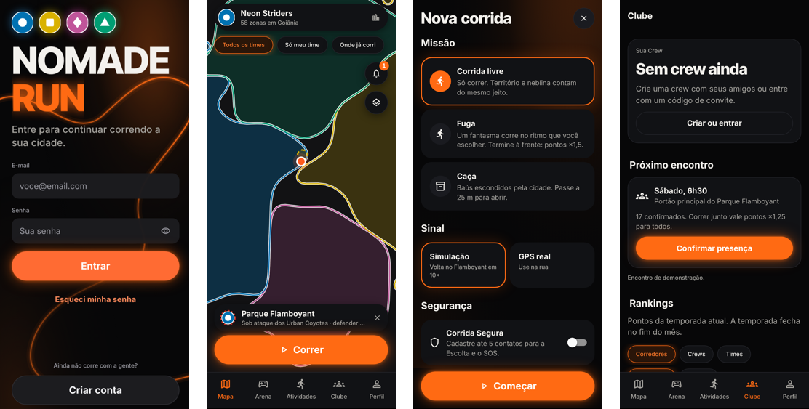

Abstract. This paper presents NOMADE RUN, a mobile running application that combines the essential features of activity trackers (GPS recording, distance, pace and history) with a territory game played on the real city map: every valid meter run inside a hexagonal zone earns points for the runner's team, and the team with the most influence controls the zone. The system was specified in a Software Requirements Specification with 27 functional requirements, 15 non-functional requirements and 19 business rules, and implemented with React Native/Expo and Supabase (PostgreSQL, PostGIS, row-level security and Edge Functions). The server is authoritative: the same pure rules module computes a provisional result on the phone and the official score on the server, protected by per-device HMAC signatures, offline queuing and anti-cheat checks. Verification combined more than 900 automated checks (unit, property, database, API, security and end-to-end) and covered all essential requirements of the minimum viable product.
Resumo. Este artigo apresenta o NOMADE RUN, um aplicativo móvel de corrida de rua que une as funções essenciais dos aplicativos de monitoramento (gravação por GPS, distância, ritmo e histórico) a um jogo de disputa de território sobre o mapa real da cidade: cada metro corrido de forma válida dentro de uma zona hexagonal gera pontos para a equipe do corredor, e a equipe com mais influência domina a zona. O sistema foi especificado em uma ERS com 27 requisitos funcionais, 15 não funcionais e 19 regras de negócio, e implementado com React Native/Expo e Supabase (PostgreSQL, PostGIS, segurança por linha e Edge Functions). O servidor é a fonte oficial das pontuações: o mesmo módulo puro de regras calcula um resultado provisório no celular e o oficial no servidor, com assinatura HMAC por aparelho, fila offline e verificações antifraude. A verificação reuniu mais de 900 checagens automatizadas (unitárias, de propriedade, de banco, de API, de segurança e de ponta a ponta) e cobriu todos os requisitos essenciais do produto mínimo viável.
Palavras-chave: gamificação; corrida de rua; jogos baseados em localização; aplicativos móveis; engenharia de software.
A inatividade física é um dos principais fatores de risco para doenças crônicas, e a Organização Mundial da Saúde recomenda ao menos 150 minutos semanais de atividade aeróbica moderada para adultos [WHO 2020]. A corrida de rua é uma das formas mais acessíveis de atingir essa meta, mas a dificuldade de manter a regularidade faz com que muitos iniciantes abandonem o hábito nas primeiras semanas.
Os aplicativos de monitoramento, como o Strava e o Nike Run Club, resolvem bem o registro esportivo (percurso, distância, ritmo e histórico), mas oferecem poucos motivos para voltar a correr além das métricas pessoais e dos rankings. Os jogos baseados em localização, por outro lado, mostraram que uma camada de jogo sobre o mundo real pode aumentar a atividade física: um estudo com mais de 30 mil usuários do Pokémon GO registrou aumento médio de mais de 25% nos passos diários nas semanas seguintes à instalação [Althoff et al. 2016].
O NOMADE RUN parte dessa combinação. O aplicativo registra a corrida como um aplicativo esportivo comum e acrescenta uma Arena de modos de jogo sobre o mapa real da cidade. O modo principal, Domínio, divide o mapa em zonas hexagonais: correr dentro de uma zona gera pontos para a equipe (facção) do corredor, e a facção com mais influência passa a dominá-la. Zonas podem ser atacadas, defendidas e fortificadas, e a influência decai com o tempo, o que obriga as equipes a voltar às ruas. O jogo funciona em qualquer cidade e permite competição entre cidades.
O objetivo deste trabalho é especificar, projetar, implementar e verificar um produto mínimo viável (MVP) desse sistema, funcional de ponta a ponta. As principais contribuições são: (i) um modelo de pontuação por esforço relativo, que equilibra iniciantes e atletas; (ii) uma arquitetura em que o servidor é a fonte oficial das pontuações e reaproveita o mesmo módulo de regras do aplicativo; (iii) mecanismos de gravação sem internet, assinatura de dados e antifraude adequados a um jogo competitivo; e (iv) uma estratégia de verificação que rastreia cada requisito até testes automatizados. O restante do artigo apresenta a fundamentação e os trabalhos relacionados (Seção 2), a metodologia (Seção 3), a arquitetura e a implementação (Seção 4), os resultados da verificação (Seção 5), as limitações (Seção 6) e as conclusões (Seção 7).
Gamificação é o uso de elementos de design de jogos em contextos que não são jogos [Deterding et al. 2011]. A revisão de Hamari, Koivisto e Sarsa [2014] concluiu que a gamificação tende a produzir efeitos positivos, mas que esses efeitos dependem do contexto e do perfil dos usuários, e que elementos como pontos, rankings e emblemas, quando usados de forma isolada, perdem força com o tempo. Por isso, o NOMADE RUN não se apoia apenas em pontos e medalhas: o progresso fica materializado no espaço (o território da equipe no mapa), há metas coletivas (defender uma zona atacada, vencer o Raid da cidade) e há ciclos de reinício (temporadas mensais e decaimento diário), que mantêm a disputa aberta para novos jogadores.
Os jogos baseados em localização usam a posição real do jogador como parte da mecânica. O Pokémon GO popularizou o gênero, e jogos de território para corredores, como Turf, Run An Empire e INTVL, mostram que a conquista de áreas é um incentivo forte para explorar a cidade. Em comum, esses produtos enfrentam dois problemas que orientaram este projeto: a justiça da pontuação (corredores rápidos ou que treinam muito tendem a dominar tudo) e a fraude (uso de bicicleta, carro ou localização simulada).
Para dividir o mapa em zonas, foi adotado o H3, sistema público de índice geoespacial hierárquico em hexágonos criado pela Uber [Brodsky 2018]. Hexágonos têm vizinhança uniforme (todos os vizinhos estão à mesma distância do centro), o que torna a disputa entre zonas adjacentes mais justa do que em grades quadradas, e a hierarquia do H3 permite agrupar zonas em distritos. O índice funciona em qualquer lugar do planeta, o que viabiliza a criação automática de zonas na primeira corrida em uma cidade nova.
Na antifraude, os aplicativos esportivos combinam limites de velocidade, coerência entre pontos consecutivos e sensores do aparelho. O NOMADE RUN aplica regras explícitas e testáveis (Seção 4.3), recalculadas sempre no servidor, e um Índice de Confiança por usuário que encaminha casos duvidosos para revisão humana.
A Tabela 1 compara o NOMADE RUN com produtos que inspiraram o projeto, segundo as funções declaradas por cada um.
| Produto | Registro esportivo | Território/mapa | Equipes | Pontuação por esforço relativo | Antifraude explícita |
|---|---|---|---|---|---|
| Strava | Sim | Não (segmentos) | Clubes | Não | Sim (aprendizado de máquina) |
| Pokémon GO | Não | Pontos fixos | Sim | Não | Sim |
| Turf / Run An Empire | Parcial | Sim | Parcial | Não | Parcial |
| INTVL | Sim | Sim (área fechada) | Clubes | Não | Parcial |
| NOMADE RUN | Sim | Sim (hexágonos H3) | 4 facções e crews | Sim | Sim (servidor) |
O trabalho seguiu as etapas clássicas da engenharia de software [Sommerville 2019; Pressman e Maxim 2021]: concepção, especificação de requisitos, projeto, implementação incremental e verificação. Na concepção foram feitas pesquisas de mercado, de interface e de tecnologia, registradas no repositório do projeto. A especificação resultou em uma ERS com 27 requisitos funcionais (RF), 15 requisitos não funcionais (RNF), 19 regras de negócio (RN) e três casos de uso detalhados: correr e conquistar (UC-01), defender território (UC-02) e analisar o mapa de calor (UC-03). Cada requisito recebeu um identificador único e, sempre que possível, um critério de aceite mensurável, para permitir a rastreabilidade até os testes.
Os requisitos foram priorizados com a técnica MoSCoW em três níveis: P0 (sem eles não há demonstração), P1 (importantes) e P2 (desejáveis). O desenvolvimento foi organizado em seis fases incrementais: (0) análise e base documental; (1) infraestrutura de banco, autenticação e camada de acesso; (2) corrida de ponta a ponta com GPS; (3) funcionalidades de jogo e sociais; (4) qualidade e segurança; e (5–6) entrega, adequação da interface ao uso móvel e animações. Ao fim de cada fase, as verificações automatizadas precisavam passar, e um registro de progresso documentava o que foi feito, os testes executados, os problemas e as pendências. As decisões técnicas foram registradas com contexto, justificativa e consequências (60 decisões ao longo do projeto).
A implementação contou com apoio de ferramentas de inteligência artificial generativa para programação, organizadas em papéis (arquitetura, backend, frontend, GPS e integrações, qualidade e segurança, documentação), sob coordenação e revisão dos autores. Todo código gerado passou pelas mesmas verificações automatizadas e pela validação dos autores no aparelho.
O sistema tem três componentes (Figura 1): o aplicativo móvel, o servidor em nuvem e o painel de moderação. O aplicativo foi desenvolvido em React Native com Expo (SDK 57) e TypeScript, com navegação por arquivos (Expo Router) e estado local com Zustand. O servidor usa o Supabase: PostgreSQL com a extensão PostGIS para dados geográficos, autenticação com tokens JWT, segurança por linha (RLS), Edge Functions em TypeScript (Deno), atualização em tempo real e tarefas agendadas (pg_cron). O painel de moderação é o próprio aplicativo executado no navegador, em uma rota acessível apenas a moderadores e administradores, o que evitou uma terceira base de código.
O código do aplicativo foi organizado em camadas com dependências em um só sentido: o módulo de regras (domínio) é puro, sem dependência de interface, banco ou rede; os serviços cuidam de infraestrutura (GPS, armazenamento, sincronização, assinatura); e as telas consomem os serviços por meio de repositórios. Essa separação permitiu atender ao RNF-008 (regras isoladas e com cobertura mínima de 90% de testes) e, principalmente, reaproveitar exatamente o mesmo código de regras nas Edge Functions do servidor.
Para cada zona percorrida em uma corrida válida, os pontos (Run Points, RP) seguem a regra RN-001:
RP = metros válidos × 0,1 × Mesforço × Msequência × Mfantasma × Mgrupo × Mdefesa
O multiplicador de esforço é a razão entre o ritmo habitual do próprio corredor (mediana das últimas dez corridas) e o ritmo da corrida, limitado entre 0,8 e 1,3. Assim, correr no próprio limite vale o mesmo para um iniciante e para um atleta. Os demais multiplicadores recompensam a regularidade semanal (até 1,5), vencer o "fantasma" na missão Fuga (1,5), correr junto com três ou mais membros da mesma crew (1,25) e defender uma zona da própria facção que está sob ataque (2,0). Há um teto de 300 RP por usuário, por zona e por dia.
A influência de cada facção em uma zona é a soma dos RP. Uma zona neutra é conquistada ao atingir 30 de influência (cerca de 300 metros corridos), para que a primeira corrida de um iniciante já conquiste algo; uma zona com dono só muda de mãos quando a desafiante atinge 110% da influência do dono (histerese que evita trocas constantes). Quando uma rival atinge 50% da influência do dono, a zona fica sob ataque: abre-se uma janela de defesa de 24 horas e os membros da facção que correram ali recentemente recebem um alerta, limitado a um por zona a cada seis horas e cinco por dia. Corridas em dias seguidos aumentam o escudo da zona (até três níveis, reduzindo em até 30% os pontos de rivais), e todos os dias, às 3h, a influência decai 10%. Esse conjunto de regras mantém o mapa vivo e impede o domínio permanente.
Em um jogo competitivo, nenhum ponto calculado no aparelho pode ser aceito sem verificação (RNF-006). O fluxo de uma corrida (UC-01) funciona assim: (1) o aplicativo cria um identificador para a corrida e grava cada ponto de GPS, com precisão, velocidade, altitude e contagem de passos, primeiro em uma fila local (SQLite); (2) a cada poucos segundos, e sempre que a conexão volta, os pontos são enviados em lotes assinados com HMAC-SHA256, com uma chave exclusiva de cada aparelho; (3) o servidor confere a assinatura, a ordem e a duplicidade de cada lote, de modo que o reenvio após uma queda de conexão não perde nem duplica pontos (RF-005); (4) ao finalizar, o servidor aplica o antifraude e as regras de pontuação e de território em uma transação que trava as zonas envolvidas, e devolve o resultado oficial. Sem internet, o aplicativo calcula um resumo provisório com o mesmo módulo de regras e o confirma automaticamente depois. Testes comparam o resultado provisório com o oficial para garantir que coincidem.
O antifraude aplica, em ordem: descarte de pontos com precisão pior que 30 m; invalidação de trechos com velocidade acima de 40 km/h, com média acima de 25 km/h por mais de 30 s ou com saltos de posição maiores que 50 m em até 1 s; verificação da cadência de passos entre 8 e 20 km/h; e rejeição da corrida inteira quando o sistema operacional sinaliza localização simulada (RN-007 e RN-008). Cada indício reduz o Índice de Confiança do usuário (RN-009); abaixo de 40, as corridas vão para a fila de moderação e só pontuam após aprovação com justificativa obrigatória (RF-018).
As senhas são armazenadas com bcrypt pelo serviço de autenticação, os tokens JWT expiram em uma hora com renovação automática, e o retorno por link de e-mail usa o fluxo PKCE, com confirmação antes de trocar de conta. Todas as tabelas têm políticas de segurança por linha: cada usuário lê apenas os próprios dados privados, e a escrita em zonas e no resultado das corridas é exclusiva do servidor. Colunas sensíveis (papel, índice de confiança, experiência) não podem ser alteradas pelo cliente, contas inativadas perdem o acesso imediatamente, e a chave administrativa existe apenas nas Edge Functions. Para atender à LGPD [Brasil 2018], o cadastro exige idade mínima de 16 anos e o aceite separado dos termos e da política de privacidade, os pedidos de permissão de localização e de notificações são precedidos de explicação, e o usuário pode exportar os próprios dados e excluir a conta pelo aplicativo. As zonas de privacidade (RN-010) escondem de terceiros os trechos do percurso próximos a endereços marcados, sem deixar de pontuar.
A interface combina o mapa dos aplicativos de navegação, na tela inicial, com o registro de atividades dos aplicativos de corrida (Figura 2). O território é desenhado como regiões suavizadas, sem mostrar a grade de hexágonos, e cada facção tem, além da cor, uma forma própria (círculo, quadrado, losango e triângulo), para que pessoas com daltonismo diferenciem as equipes [Okabe e Ito 2008]. A identidade visual adota fundo escuro e um único destaque em laranja neon, e as animações seguem curvas e durações curtas inspiradas em sites esportivos de referência. Elementos interativos têm área de toque mínima de 44 pt, descrição para leitores de tela e contraste de texto de pelo menos 4,5:1 [W3C 2018]; com a opção "Reduzir movimento" do sistema, as animações viram apenas transições de opacidade. A tela de corrida mostra no máximo três métricas em números grandes, e encerrar exige manter o botão pressionado por 600 ms, para evitar o fim acidental com o celular no bolso (RNF-015). A Corrida Segura (RF-024) permite cadastrar até cinco contatos, oferece um botão SOS sempre visível e pergunta se está tudo bem quando o corredor fica parado por mais de dez minutos, avisando os contatos se não houver resposta.

A verificação combinou testes em vários níveis, todos automatizados e executados a cada fase (Tabela 2). Os testes do módulo de regras incluem testes baseados em propriedades, que geram milhares de entradas e verificam invariantes: os pontos nunca são negativos nem ultrapassam o teto diário, a conquista respeita a histerese, o decaimento é monotônico, nenhum trecho válido passa de 40 km/h e a fila offline nunca repete um número de sequência. Uma auditoria de segurança dedicada testou, de forma adversarial, as políticas de cada tabela e cada função do servidor (acesso a dados de terceiros, escalada de papel, assinatura adulterada, reenvio, entradas inválidas).
| Suíte | O que verifica | Resultado |
|---|---|---|
| Unitários e de propriedade (Jest) | regras, serviços, sincronização, telas | 410 aprovados |
| Cobertura do módulo de regras | linhas / ramos (meta RNF-008: 90%) | 99,5% / 99,6% |
| Integração aplicativo × servidor | cadastro, corrida, zonas, moderação | 26/26 |
| Banco de dados (pgTAP) | políticas RLS, gatilhos, funções SQL | 285/285 |
| Edge Functions (Deno) | HMAC, validações, pontuação oficial | 58 aprovados |
| Ponta a ponta do servidor | fluxos completos da API | 56/56 |
| Auditoria de segurança adversarial | ataques às funções e às políticas | 89/89 |
| Navegador (Playwright) | demonstração completa e comparação visual | 14/14 e 4/4 |
A auditoria de qualidade e segurança não encontrou falhas de severidade alta; os quatro achados de severidade média (por exemplo, a exposição do código de convite das crews e um limite de zonas por consulta menor que o especificado) foram corrigidos com testes que falhavam antes e passaram depois. Também foram medidos indicadores de desempenho no ambiente local: a consulta de zonas visíveis respondeu com p95 de 35 ms para 2.000 zonas (meta do RNF-009: 150 ms), e uma troca de dono chegou ao mapa de outro usuário entre 0,2 s e 1,0 s (meta do RNF-003: 3 s). A Tabela 3 resume a situação dos requisitos da ERS.
| Tipo | Implementado | Parcial | Não implementado | Fora do MVP |
|---|---|---|---|---|
| Requisitos funcionais (27) | 13 | 12 | 2 | 0 |
| Requisitos não funcionais (15) | 6 | 6 | 1 | 2 |
| Regras de negócio (19) | 13 | 4 | 2 | 0 |
| Total (61) | 32 | 22 | 5 | 2 |
Todos os 25 requisitos de prioridade P0 foram implementados total ou parcialmente; os itens marcados como parciais funcionam no essencial, com pendências documentadas (por exemplo, compartilhamento da localização ao vivo na Escolta). Os cinco não implementados são de prioridade P1 ou P2: mapa de calor, feed social, título de Prefeito, Raid com dados reais e uma meta de desempenho a ser medida em aparelho. O backend foi publicado no Supabase Cloud e o aplicativo foi distribuído por atualização remota (EAS Update), o que permite testá-lo em qualquer rede, sem depender do computador de desenvolvimento.
A decisão mais importante do projeto foi tornar o servidor a fonte oficial das pontuações e reaproveitar nele o mesmo módulo de regras do aplicativo. Isso eliminou a duplicação de lógica, garantiu que o resumo provisório offline coincida com o oficial e concentrou nos testes do domínio a maior parte da complexidade do jogo. A pontuação por esforço relativo e o limiar baixo de conquista de zonas neutras foram pensados para que iniciantes tenham ganhos visíveis já na primeira corrida, alinhando o jogo ao objetivo de saúde do produto.
O trabalho tem limitações. A gravação com a tela bloqueada e as notificações push exigem uma versão de desenvolvimento do aplicativo, pois o Expo Go não oferece esses recursos em todas as plataformas; no MVP, os alertas chegam por uma central de notificações no próprio aplicativo. A Escolta compartilha a posição no momento do envio, e não um rastreamento contínuo. Não foram executados o teste de carga com 5.000 corredores simultâneos (RNF-001) nem a medição de consumo de bateria (RNF-004), e os fluxos de teste em aparelho (Maestro) foram escritos, mas não executados em dispositivos físicos. A assinatura HMAC dificulta a adulteração dos dados em trânsito, mas não prova que o cliente é o aplicativo oficial; para isso seria necessária a atestação do aparelho (Play Integrity e App Attest). Por fim, a identidade visual escura única diverge do tema claro/escuro automático previsto no RNF-010, e a troca de cor de uma facção para vermelho reduziu a separação entre cores para pessoas com deuteranopia, o que é compensado pelas formas de cada equipe; ambas as decisões estão registradas e devem ser refletidas em uma revisão da ERS.
Este artigo apresentou o NOMADE RUN, um aplicativo que transforma a corrida de rua em uma disputa de território entre equipes sobre o mapa real da cidade. O MVP funciona de ponta a ponta: cadastro, escolha de facção, corrida com GPS ou simulação, gravação sem internet, sincronização assinada, validação antifraude, pontuação e conquista no servidor, atualização do mapa em tempo real, alertas de invasão, rankings, crews, Corrida Segura e moderação. A verificação automatizada em vários níveis, rastreada até os requisitos, deu segurança para evoluir o sistema ao longo das fases.
Como trabalhos futuros, destacam-se: implementar o mapa de calor e o feed social; executar os testes em aparelhos físicos e o teste de carga; adotar a atestação de aparelho para o antifraude; habilitar a gravação em segundo plano e as notificações push em uma versão publicada nas lojas; e, principalmente, conduzir um estudo com corredores reais para medir se a camada de jogo aumenta a regularidade de treino em relação a um aplicativo de corrida convencional, que é a hipótese central do projeto.
ALTHOFF, T.; WHITE, R. W.; HORVITZ, E. Influence of Pokémon Go on physical activity: study and implications. Journal of Medical Internet Research, v. 18, n. 12, e315, 2016.
BRASIL. Lei nº 13.709, de 14 de agosto de 2018. Lei Geral de Proteção de Dados Pessoais (LGPD). Diário Oficial da União, Brasília, 2018.
BRODSKY, I. H3: Uber's hexagonal hierarchical spatial index. Uber Engineering Blog, 2018. Disponível em: https://www.uber.com/blog/h3/.
DETERDING, S.; DIXON, D.; KHALED, R.; NACKE, L. From game design elements to gamefulness: defining "gamification". In: Proceedings of the 15th International Academic MindTrek Conference. Tampere: ACM, 2011. p. 9–15.
EXPO. Expo documentation (SDK 57). Disponível em: https://docs.expo.dev/.
HAMARI, J.; KOIVISTO, J.; SARSA, H. Does gamification work? A literature review of empirical studies on gamification. In: Proceedings of the 47th Hawaii International Conference on System Sciences. IEEE, 2014. p. 3025–3034.
OKABE, M.; ITO, K. Color Universal Design (CUD): how to make figures and presentations that are friendly to colorblind people. 2008. Disponível em: https://jfly.uni-koeln.de/color/.
OWASP FOUNDATION. OWASP Top 10: 2021. Disponível em: https://owasp.org/Top10/.
PRESSMAN, R. S.; MAXIM, B. R. Engenharia de software: uma abordagem profissional. 9. ed. Porto Alegre: AMGH, 2021.
SOMMERVILLE, I. Engenharia de software. 10. ed. São Paulo: Pearson, 2019.
SUPABASE. Supabase documentation: Database, Auth, Row Level Security e Edge Functions. Disponível em: https://supabase.com/docs.
W3C. Web Content Accessibility Guidelines (WCAG) 2.1. W3C Recommendation, 2018. Disponível em: https://www.w3.org/TR/WCAG21/.
WORLD HEALTH ORGANIZATION. WHO guidelines on physical activity and sedentary behaviour. Geneva: WHO, 2020.